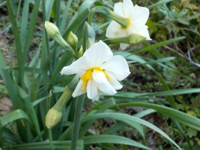
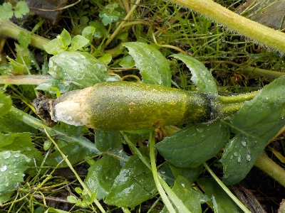
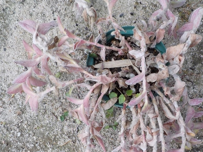

遊びで植物を育てよう
2024/12/31
年末なので水仙咲いててもいい時期ですね。

大晦日です。昔はお正月の準備したりこたつに入ってテレビ見てたな。
あー懐かしい。今日は外で色々作業してました。
【ページTOP】
【12月TOP】
【園芸TOP】
2024/12/22
畑でカボチャが腐ってました。

まだ育つかもと小さいカボチャを放置していたんですが、寒さでダメになっていました。
年末なので当たり前ですね。すぐに片付けるのが一番いいんですが、面倒ですね。
【ページTOP】
【12月TOP】
【園芸TOP】
2024/12/01
トラディスカンチアが赤くなる季節になりました。

ちょっと前まで緑色でしたが、急に赤くなってぐったりとなりました。
12月になって冬が始まった感じです。
【ページTOP】
【12月TOP】
【園芸TOP】
過去の日記
【2023年12月の日記】
【2022年12月の日記】
【2021年12月の日記】
【2019年12月の日記】
【2018年12月の日記】
【2017年12月の日記】
【2016年12月の日記】
【2015年12月の日記】
【2014年12月の日記】
【2013年12月の日記】
【ページTOP】
【12月TOP】
【園芸TOP】
畑仕事じゃないよ。
【おいしいものを食べよう。】【たくさん寝よう。】
【ソロ活をしよう!】【季節感のあることをしよう。】【動画視聴はほどほどに。】【当サイトの全てのコンテンツは無断転載禁止です。】